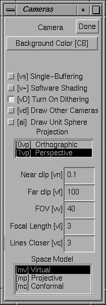

3.7 Cameras
A camera in Geomview is the object that corresponds to a camera window.
By default there is only one camera, but it is possible to have as many
as you want. You can control certain aspects of the way the world is
drawn in each camera window via the Cameras panel.

Figure 3.8: The Cameras Panel.
If the target object is a camera, the Cameras panel affects that
camera. If the target object is not a camera, the Cameras panel
affects the current camera. The current camera is the camera of
the window that the mouse cursor is in, or was in most recently if the
cursor is not in a camera window. Thus, if you use the keyboard
shortcuts for the actions in the Cameras panel while the cursor
is in a camera window, the actions apply to that camera, unless you have
explicitly selected another camera.
To create new camera windows, use the v+ keyboard shortcut,
or see the File menu on the Main panel.
- Single-Buffering
- Normally, geomview windows are double-buffered: geomview draws the
next picture into a hidden window, then switches buffers to make
it visible all at once. On many systems, the memory for the hidden buffer
comes from stealing half the bits in each screen pixel, reducing the color
resolution. When single-buffering is enabled, the window flickers as each
scene is being drawn, but you may get smoother images with reduced grainy
dithering artifacts. Single-buffering is possible if Geomview is compiled with
GL or OpenGL, but not with plain-X graphics.
- Dither
- Many displays offer less than the 24 bits per pixel (8 bits each of red, green,
and blue) conventionally needed to show smooth gradations of color.
When trying to show a color not accurately available on the display,
Geomview normally dithers, choosing pixel colors sometimes brighter,
sometimes darker than the desired value, so that the average color over an area
is a better approximation to the true color than a single pixel could be.
Effectively this loses spatial resolution to gain color resolution.
This isn't always desirable, though. Turning Dither off
gives less grainy, but less accurately colored, images.
- Software Shading
- This button controls whether Geomview does shading calculations in software.
The default is to let the hardware handle them, and in Euclidean space
this is almost certainly best because it is faster. In hyperbolic and
spherical space, however, the shading calculations that the hardware
does are incorrect. Click this button to turn on correct but slower
software shading.
- Background Color
- This button brings up a color chooser which you can use to set the
background color of the camera's window.
- PROJECTION
- This browser lets you pick between perspective and orthogonal projection
for this camera.
- Near clip
- This determines the distance in world coordinates of the near clipping
plane from the eye point. It must be a positive number.
- Far clip
- This determines the distance in world coordinates of the far clipping
plane from the eye point. It must be a positive number and in general
should be larger than the Near clip value.
- FOV
- This is the camera's field of view, measured in its shorter direction.
In perspective mode, it is an angle in degrees. In orthographic mode,
it is the linear size of the field of view. This number can be modified
with the mouse in Cam Zoom mode.
- Focal Length
- The focal length is intended to suggest the distance from the camera to
an imaginary plane of interest. Its value is used when switching
between orthographic and perspective views (and during stereo viewing),
so as to preserve apparent size of objects lying at the focal distance
from the camera. Focal length also affects interpretation of mouse-based
translational motions. Speed of forward motion (in translate, fly and
orbit modes) is proportional to focal length; and objects lying at the
focal distance from the camera translate laterally at the same rate as
the mouse cursor. Finally, in N-D projection mode, cameras are displaced
back by the focal distance from the 3-D projection of the world origin.
- Lines Closer
- This number has to do with the way lines are drawn. Normally Geomview's
z-buffering algorithm can get confused when drawing lines that lie
exactly on surfaces (such as the edges of an object); due to machine
round-off error, sometimes the lines appear to be in front of the
surface and sometimes they appear behind it. The Lines Closer
value is a fudge factor — Geomview nudges all the lines that it draws
closer to the camera by this amount. The number should be a small
integer; try 5 or 10. 0 turns this feature off completely. Choosing
too large a value will make lines visible even though they should be
hidden.
- SPACE MODEL
- This determines the model used to draw the world. It is most useful in
hyperbolic and spherical spaces. You probably don't need to touch this
browser if you stay in Euclidean space. For more information about
these models, see Non-Euclidean Geometry.
- Virtual
- This is the default model and represents the natural view from inside
the space.
- Projective
- The projective model of hyperbolic and spherical space. Geoms move
under isometries of the space, and cameras move by Euclidean motions.
By default in the projective model, the Euclidean unit sphere is drawn.
In hyperbolic space this is the sphere at infinity. In Euclidean space
the projective model is the same as the virtual model except that the
sphere is drawn by default.
- Conformal
- The conformal model of hyperbolic and spherical space. Geoms move under
isometries of the space, and cameras move by Euclidean motions. In
Euclidean space, the conformal model amounts to inverting everything in
the unit sphere.
- Draw Sphere
- This controls whether Geomview draws the unit sphere. By default the
unit sphere appears in the projective and conformal models. In
hyperbolic space this is the sphere at infinity. In spherical space it
is the equatorial sphere.
- Done
- This button dismisses the Cameras panel.